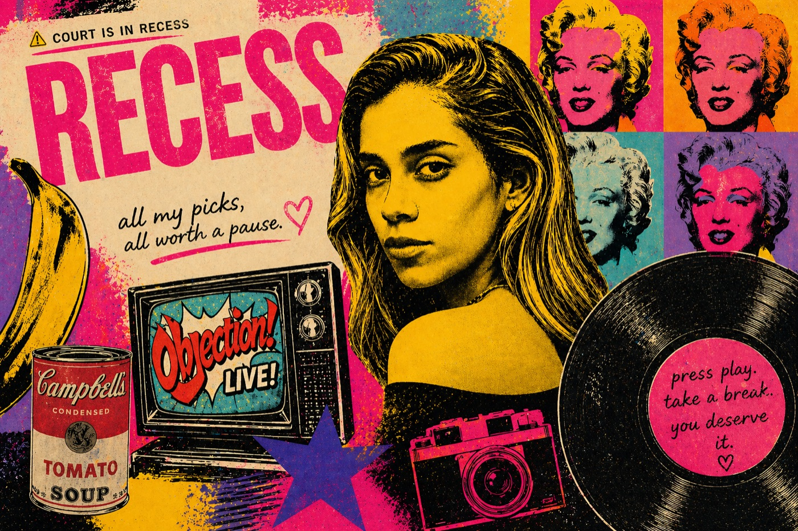

New look. New home. Same docket.
First — the docket. Then the theory nobody saw coming. Then the clip going viral. Then the blind item that landed before the DA did.
I'm obviously using a throwaway, but I know someone who worked on the movie for most of its run, who would have gotten these details piping hot, not some grapevine situation. They told me first hand what they know. I'll give bullet points.
I think that's everything I know.
Open original on Reddit ↗Ten of thirteen claims dismissed. Justin Baldoni out. Melissa Nathan out. Jennifer Abel out. The companies still go to trial — and tomorrow's pre-trial conference sets the agenda for the next 21 days.
It's a defendant saying to the judge: "Even if everything the plaintiff alleged is true, they still don't have a legal claim. Throw it out — no need for a jury."
In the four days before tomorrow's conference, both sides hit the docket hard. Here's each filing in plain English.
Both sides filed motions in limine — pre-trial requests to exclude evidence. These are the rulings that decide what the jury sees on May 18.
Lawyer-creator NAG's reaction to ECF #1409 — Wayfarer's April 25 reply in further support of the MJOP. Section-by-section breakdown.
Three real, filed cases — one in LA, two in Australia (different courts). Defamation, distribution sabotage, and the lead actress on the stand. One The Deb. A web of lawsuits.
Cross-examination kicks off Tuesday and runs about two days — the messages, the meme, the insurance policy, and the smear-site allegations. Two pre-trial moments on the same day, two continents apart.
Like the Baldoni-Lively case, this one keeps pulling the curtain back on how Hollywood actually operates — the budget fights, the lot bans, the texts, the back-channel PR. Here's the whole picture in one frame.
A new pop-culture column from Celebrity Dockets. When court's out, RECESS picks up — music, screens, books, and everything else that's keeping us occupied between filings.

He stared at celebrity until it became obvious — fame is a product, just like a Campbell's soup can. He didn't worship it. He didn't tear it down. He just looked at it honestly.
Celebrities through their art and the people they love — the records, the films, the books, the relationships. The dockets show what breaks. RECESS is for the beauty of fame.
The rebrand to Celebrity Dockets wouldn't have happened without you. Every single one mattered.
Become a member, send a Super Chat in a live show, or buy CJ a coffee.
@cjournalist24 A "heat check" is a term used when a player makes several shots in a row and takes another difficult shot to see if they are still "hot". 🔥 We stay winning 🏆 #fyp #justinbaldoni ♬ SPEED DEMON - Justin Bieber